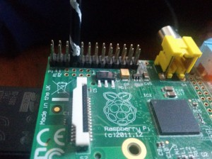

Depuis que j'ai ce joujou de raspberry
pi, je ne cesse de
chercher à le bidouiller pour donner des choses marrantes.
Et je suis tombé sur un article décrivant comment bidouiller son RPI
pour en faire une radio.
Il faut savoir que le RPI (modèle A et B) possède 26 pins GPIO
permettant de contrôler un module externe ou de recevoir des
informations. Avec un petit bout de code (en Python ou autre), il est
alors possible par exemple d'allumer une LED, faire tourner un moteur,
recevoir un signal quand on appuie sur un bouton, ... Les usages sont
multiples et infinis.
Dans cet article, je vais vous montrer comment j'ai moi-même fait pour
faire fonctionner mon RPI en mode radio, car j'ai certaines choses à
rajouter concernant l'installation de base.
Tout d'abord on se connecte en SSH sur la raspberry, et une fois dessus,
on va récupérer le script Python qui permet de lancer la radio :
Vous copiez ensuite vos musiques dans le répertoire que vous avez
indiqué dans le fichier de configuration. Après ça, il vous faut trouver
un fil métallique afin de faire antenne. Pour ma part, j'ai récupéré le
câble d'un appareil qui ne fonctionnait plus. Vous devez le brancher sur
votre RPI sur le GPIO 4 (le pin 7) comme sur la photo ci dessus :

Il vous reste ensuite plus qu'à lancer la radio avec la commande
python /pirateradio/PirateRadio.py
J'ai créé un script shell pour installer tout ça automatiquement,
disponible ici : https://github.com/matlink/rpi-radio
source
Commentaires